청소년상담사-2급(2교시)(구) (2015-03-28 기출문제)
1과목: 진로상담
1. 홀랜드(Holland) 유형의 구성개념과 설명이 옳은 것은?
- 변별성: 유형 간의 상대적 중요도의 관계를 의미한다.
- 계측성: RI유형 흥미를 가진 사람이 RS유형 흥미를 가진 사람보다 계측성이 높다.
- 일관성(consistency): 개인의 흥미유형과 자신이 속한 직업환경유형의 유사성을 반영한다.
- 일치성(congruence): 육각형모형에서 흥미유형 또는 직업환경유형 간의 거리는 그들의 이론적 관계와 비례한다.
- 정체성: 변별성, 일관성, 일치성이 모두 낮을 때 정체성이 높아진다.
(정답률: 알수없음)

2. 다음 사례에서 나타난 상담자의 반응과 관련이 없는 것은?
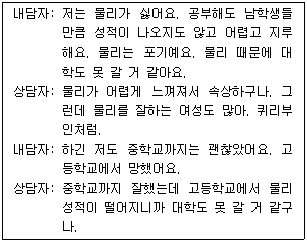
- 자기효능감 탐색
- 직업가치관 평가
- 역할모델 제시
- 공감적 반영
- 결과기대 탐색
(정답률: 알수없음)
3. 홀랜드(Holland)가 개발한 검사만 고른 것은?
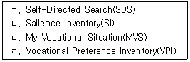
- ㄱ, ㄹ
- ㄱ, ㄴ, ㄷ
- ㄱ, ㄷ, ㄹ
- ㄴ, ㄷ, ㄹ
- ㄱ, ㄴ, ㄷ, ㄹ
(정답률: 알수없음)
4. 사회인지 진로이론에 관한 설명으로 옳은 것을 모두 고른 것은?
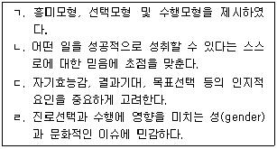
- ㄱ, ㄹ
- ㄴ, ㄷ
- ㄱ, ㄴ, ㄷ
- ㄴ, ㄷ, ㄹ
- ㄱ, ㄴ, ㄷ, ㄹ
(정답률: 알수없음)
5. 로(Roe)의 진로상담이론에 관한 설명으로 옳지 않은 것은?
- 초기 부모와의 관계가 이후 진로에 미치는 영향을 강조하였다.
- 매슬로우(Maslow)의 욕구체계 이론에 영향을 받았다.
- 서비스직, 옥외활동직, 예능직 등을 포함하여 흥미에 기초한 8가지 직업군을 제안하였다.
- 확신성, 안정성, 목적성의 정도를 기준으로 4단계의 직업수준을 제시하였다.
- 부모가 자녀에게 냉담하고 자녀의 선호나 의견을 무시하면 자녀가 과학이나 연구계통의 직업을 갖게 된다고 설명하였다.
(정답률: 알수없음)
6. 개인의 욕구와 능력을 환경의 요구와 연관지어 평가하고 개인-환경간의 일치 정도를 분석하는 진로상담이론은?
- 직업적응이론
- 생애진로발달이론
- 제한-타협이론
- 사회학습이론
- 진로의사결정이론
(정답률: 알수없음)
7. 다음에 제시된 민수의 진로상담에 적절하지 않은 상담기법은?
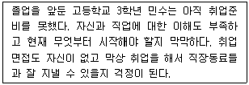
- 멘토와의 대화를 통한 진로정보 수집
- 흥미와 적성에 대한 평가
- 동영상을 활용한 면접 연습
- 가계도를 통한 삼각관계 분석
- 역할연습을 통한 대인관계 기술 훈련
(정답률: 알수없음)
8. 진로사고검사(CTI)에 관한 설명으로 옳은 것은?
- 성차별, 자신감 부족과 같은 진로선택과 진로결정에 긍정적 영향을 주는 다양한 요인을 측정한다.
- 진로와 관련된 다양한 진로탐색 활동을 성공적으로 수행할 수 있는지에 대한 확신성의 정도를 측정한다.
- 사회인지 진로이론에 근거하여 진로선택을 방해하는 생각, 비합리적 신념을 명료화하여 측정한다.
- 하위요인에는 목표선택, 직업정보, 문제해결, 미래계획이 포함된다.
- 하위요인에는 수행불안, 외적 갈등, 의사결정혼란이 포함된다.
(정답률: 알수없음)
9. 진로상담에서 정보제공에 관한 설명으로 옳지 않은 것은?
- 정보는 그 자체 보다는 이용 가치의 높고 낮음에 의해 중요도가 결정된다.
- 내담자가 비합리적인 신념을 가지고 있을 경우, 정보를 적절히 사용할 준비가 안 되어 있다고 볼 수 있다.
- 직업정보를 활용하기 전에 정보출처의 신뢰도, 최신성, 취득경로 등을 검토한다.
- 직업사전, 직업전망서, 직업분류 등을 통해 직업에 대한 정보를 얻을 수 있다.
- 직업사전, 학과정보, 자격정보 등을 제공하고 있는 커리어넷은 교육부에서 운영하고 있다.
(정답률: 알수없음)
10. 다음 진로상담가와 이론을 바르게 연결한 것을 모두 고른 것은?
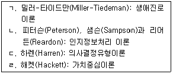
- ㄱ, ㄷ
- ㄴ, ㄹ
- ㄱ, ㄴ, ㄷ
- ㄴ, ㄷ, ㄹ
- ㄱ, ㄴ, ㄷ, ㄹ
(정답률: 알수없음)
11. 갓프레드슨(Gottfredson)의 이론에서 '크기와 힘 지향 단계'에 관한 설명으로 옳은 것은?
- 자신의 상대적 능력에 대해 판단하기 시작하고 상대적 서열과 관련을 짓는다.
- 불도저, 야구공 등 사용하는 도구에 기초해서 직업을 이해한다.
- 직업을 이해할 때 자신의 성(sex)에 적합한지를 살펴본다.
- 수용 가능한 직업 종류가 무엇인지 구체화한다.
- 이분법적 정체감을 형성하게 된다.
(정답률: 알수없음)
12. 자신이 좋아하는 일이 무엇인지 알고 싶은 남자 중학생을 위한 프로그램으로 적합한 것은?
- 양성평등 교육
- 부모기대관리 훈련
- 지능검사
- 직업전환 실습
- 직업카드 분류
(정답률: 알수없음)
13. 다음과 같은 진로문제를 특징적으로 경험하는 집단은?
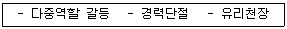
- 영재
- 여성
- 장애인
- 노인
- 청소년
(정답률: 알수없음)
14. 구성주의 진로이론에 관한 설명으로 옳은 것을 모두 고른 것은?
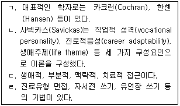
- ㄱ, ㄹ
- ㄴ, ㄷ
- ㄱ, ㄴ, ㄹ
- ㄴ, ㄷ, ㄹ
- ㄱ, ㄴ, ㄷ, ㄹ
(정답률: 알수없음)
15. 생애진로사정(Life Career Assessment: LCA)에 관한 설명으로 옳지 않은 것은?
- 아들러(Adler)이론에 기초하여 내담자의 정보를 수집하는 구조화된 면접기법이다.
- 진로사정, 일상적인 하루, 강점과 약점, 요약의 네 부분으로 구성되어 있다.
- 면담은 30분 정도 짧게 할 수 있으나 필요에 따라서는 몇 회기에 걸쳐 심도 있게 할 수도 있다.
- '일상적인 하루'는 성격요인 중 호기심, 인내심, 유연성, 낙관성, 위험감수 차원을 탐색하는 과정이다.
- '요약'은 회기에서 내담자가 깨달은 것을 정리하고 문제해결과 연결하는 과정이다.
(정답률: 알수없음)
16. 채프먼(Chapman)의 진학의사결정 모형을 순서대로 올바르게 나열한 것은?
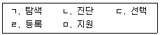
- ㄱ - ㄴ - ㄷ - ㄹ - ㅁ
- ㄱ - ㄷ - ㄴ - ㄹ - ㅁ
- ㄴ - ㄱ - ㄷ - ㅁ - ㄹ
- ㄴ - ㄷ - ㄱ - ㅁ - ㄹ
- ㄴ - ㄷ - ㅁ - ㄱ - ㄹ
(정답률: 알수없음)
17. 미국의 진로발달학회(NCDA)에서 제시한 진로상담자가 일반적으로 수행해야 하는 활동을 모두 고른 것은?
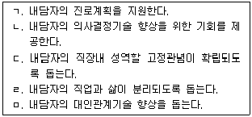
- ㄱ, ㄴ
- ㄱ, ㄴ, ㅁ
- ㄱ, ㄴ, ㄹ, ㅁ
- ㄱ, ㄷ, ㄹ, ㅁ
- ㄴ, ㄷ, ㄹ, ㅁ
(정답률: 알수없음)
18. 진로에 관한 설명으로 옳지 않은 것은?
- 한 개인의 전 생애 과정이다.
- 직업, 여가 모두를 포함하는 생활방식이다.
- 개인의 역할 통합에 영향을 주는 과정이다.
- 미래지향적 특성을 나타낸다.
- 흥미와 적성에 맞는 직업을 선택하는 순간 완성된다.
(정답률: 알수없음)
19. 하렌(Harren)의 진로이론에 관한 설명으로 옳지 않은 것은?
- 대학생 연령의 진로의사결정에 초점을 맞추어 모형을 발달시켰다.
- 진로의사결정 영향요인으로 자아개념과 의사결정 유형을 제안하였다.
- 진로의사결정 유형은 합리적 유형, 직관적 유형, 의존적 유형으로 나뉜다.
- 진로의사결정단계는 계획단계, 인식단계, 이행단계, 확신단계 순으로 이루어진다.
- 진로의사결정모형은 진로에 대한 의사결정에 어려움을 겪는 내담자에게 도움을 준다.
(정답률: 알수없음)
20. C-DAC(Career Development Assessment and Counseling)모형에 관한 설명으로 옳지 않은 것은?
- 내담자가 생애역할의 우선순위를 결정하도록 도울 수 있다.
- 이 모형은 겔라트(Gellat) 이론에서 도출되었다.
- 내담자가 일상생활의 다양한 역할을 조화롭게 수행하도록 도울 수 있다.
- 내담자의 주요한 진로문제, 진로발달과업, 진로의사결정 준비도 등을 평가할 수 있다.
- 진로상담을 통해 얻어진 검사 결과의 사용방법에 관심을 둔다.
(정답률: 알수없음)
21. 여성가족부가 만 15세∼24세 취약계층 청소년의 자립준비를 지원하기 위해 개발한 프로그램으로 체험 중심의 종합적인 자활지원 사업은?
- 두드림ㆍ해밀 사업
- 취업성공패키지 사업
- 유스빌드 사업
- 뉴딜프로그램 사업
- 드림스타트 사업
(정답률: 알수없음)
22. 크롬볼츠(Krumboltz)의 이론에 관한 설명으로 옳은 것을 모두 고른 것은?
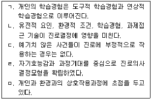
- ㄱ, ㄴ, ㅁ
- ㄱ, ㄷ, ㄹ
- ㄱ, ㄴ, ㄷ, ㄹ
- ㄱ, ㄴ, ㄹ, ㅁ
- ㄴ, ㄷ, ㄹ, ㅁ
(정답률: 알수없음)
23. 진로발달단계를 고려할 때 초등학생 진로상담의 목표로 적절한 것은?
- 전문적인 직업능력의 배양
- 개인의 특성 탐색을 통한 자기 이해 증진
- 직업선택능력과 태도의 함양
- 장래직업의 보편적 영역에 관한 잠정적 선택
- 취업기회에 관한 잠정적 가능성의 탐색
(정답률: 알수없음)
24. 긴즈버그(Ginzberg)의 이론에서 직업목표를 정하고, 자신의 결정에 관한 내적ㆍ외적 요소를 종합할 수 있으며, 타협이 중요한 요인이 되는 단계는?
- 능력(capacity) 단계
- 탐색(exploration) 단계
- 결정화(crystallization) 단계
- 가치(value) 단계
- 전환(transition) 단계
(정답률: 알수없음)
25. 수퍼(Super)의 이론에서 정착(stabilizing), 공고화(consolidating), 발전(advancing)의 발달과업이 수행되는 발달단계는?
- 탐색기
- 확립기
- 성장기
- 유지기
- 쇠퇴기
(정답률: 알수없음)
26. 학교에서 실시되는 진로상담의 주요원리에 관한 설명으로 적절한 것을 모두 고른 것은?
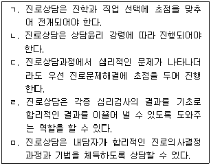
- ㄱ, ㄴ, ㄷ, ㄹ
- ㄱ, ㄴ, ㄷ, ㅁ
- ㄱ, ㄴ, ㄹ, ㅁ
- ㄱ, ㄷ, ㄹ, ㅁ
- ㄴ, ㄷ, ㄹ, ㅁ
(정답률: 알수없음)
27. 수퍼(Super)의 이론에서 진로성숙(career maturity)의 하위요인에 관한 설명으로 옳지 않은 것은?
- 선호하는 직업의 분야와 수준의 일관성
- 선호하는 직업에 대한 정보와 진로계획의 구체화
- 진로선택과 직업정보 관련 사항을 다루는 태도
- 흥미, 가치 등 개인 특성의 세분화
- 직업선택 시 능력, 활동, 흥미와 선호 직업이 일치하는지를 판단할 수 있는 현실성
(정답률: 알수없음)
28. 파슨스(Parsons)의 특성ㆍ요인이론에 관한 설명으로 옳지 않은 것은?
- 개인의 특성과 직업의 요구가 일치할수록 직업적 성공 가능성이 크다.
- 사람들은 신뢰할 수 있고 타당하게 측정될 수 있는 특성을 지니고 있다.
- 특성은 특정 직무의 수행에서 요구하는 조건을 의미한다.
- 직업선택은 직접적인 인지과정이기 때문에 개인은 자신의 특성과 직업이 요구하는 특성을 연결할 수 있다.
- 직업은 개인에게 성공적인 적응에 필요한 매우 구체적인 특성을 갖출 것을 요구한다.
(정답률: 알수없음)
29. 윌리암슨(Williamson)의 진로상담과정에서 '종합단계'에 관한 설명으로 옳은 것은?
- 내담자의 독특성이나 개별성을 강조하기 위해 사례연구와 검사 자료를 수집하고 요약한다.
- 태도, 흥미, 적성 등에 관한 자료를 주관적 또는 객관적 방법으로 수집한다.
- 내담자의 문제 및 뚜렷한 특징을 기술한 개인자료와 학문적ㆍ직업적 능력을 비교하여 문제의 원인을 탐색한다.
- 현재와 미래의 바람직한 적응을 위해 무엇을 해야 할 지를 내담자와 함께 이야기한다.
- 문제해결을 위해 내담자가 고려해야 할 대안적 조치를 예측한다.
(정답률: 알수없음)
30. 크롬볼츠(Krumboltz)가 제안한 진로상담의 기본가정에 관한 설명으로 옳지 않은 것은?
- 내담자의 학습을 촉진하기 위해 진로 관련 심리검사를 활용한다.
- 진로상담의 목표는 내담자가 만족스러운 진로와 인생을 선택하여 살아가는 방법을 습득하게 하는 것이다.
- 진로 관련 심리검사는 개인 특성과 직업 특성을 매칭(matching)하기 위한 것만은 아니다.
- 상담자는 내담자가 탐색적 활동에 집중하면서 우연히 일어난 일을 유용하게 활용할 수 있음을 깨닫게 한다.
- 상담의 성공여부는 상담실에서의 내담자 반응에 의해 결정된다.
(정답률: 알수없음)
2과목: 집단상담
31. 행동주의 집단상담 기법만을 모두 고른 것은?
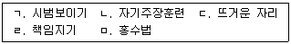
- ㄱ, ㄴ, ㄷ
- ㄱ, ㄴ, ㅁ
- ㄱ, ㄷ, ㄹ
- ㄴ, ㄷ, ㄹ
- ㄴ, ㄹ, ㅁ
(정답률: 알수없음)
32. 컨버그(Kernberg)와 코헛(Kohut)이 경계선 성격장애나 자기애성 성격장애를 가진 사람들을 대상으로 집단상담의 기틀을 마련한 이론적 접근은?
- 대상관계
- 교류분석
- 행동주의
- 인본주의
- 실존주의
(정답률: 알수없음)
33. 로저스(Rogers)가 제안한 참만남 집단과정 15단계에 해당하는 것을 모두 고른 것은?
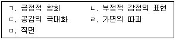
- ㄱ, ㄴ, ㄷ
- ㄱ, ㄷ, ㄹ
- ㄴ, ㄷ, ㅁ
- ㄴ, ㄹ, ㅁ
- ㄱ, ㄴ, ㄷ, ㄹ
(정답률: 알수없음)
34. 교류분석(TA) 집단상담에 관한 설명으로 옳지 않은 것은?
- 게임분석은 게임에 나타나는 집단원의 강점을 위계별로 구분하도록 돕는다.
- 구조분석은 문화적 적응을 돕는다.
- 생활각본은 생의 초기부터 외적 사건들에 대한 해석을 기초로 형성된다.
- 교류분석은 집단원이 독특한 존재로 자율성을 성취하도록 돕는다.
- 교류분석은 상호존중의 생활태도를 강조한다.
(정답률: 알수없음)
35. 다음의 활동은 무엇을 위한 것인가?
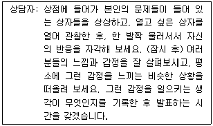
- 인지적 집중
- 체계적 둔감화
- 논박
- 카타르시스
- 조형
(정답률: 알수없음)
36. 현실치료 집단상담에서 청소년의 전행동(total behavior) 중 통제하기 쉬운 것부터 순서대로 나열한 것은?
- 생리반응-감정-사고-행동
- 사고-행동-감정-생리반응
- 감정-사고-생리반응-행동
- 사고-행동-생리반응-감정
- 행동-사고-감정-생리반응
(정답률: 알수없음)
37. 아들러(Adler)의 개인심리학적 집단상담에서 집단원이 사용하는 자기 보호성향(safeguarding tendency) 기제에 관한 설명으로 옳지 않은 것은?
- 사회적 상황에서 무의식적으로 작동한다.
- 변명은 집단원의 보호성향 중 하나이다.
- 철회는 집단원의 보호성향 중 하나이다.
- 공격성은 집단원의 보호성향 중 하나이다.
- 자존감을 지키기 위해 작동한다.
(정답률: 알수없음)
38. 게슈탈트 집단상담 기법과 그 내용으로 옳지 않은 것은?
- 신체활동 과장하기: 신체언어로 보내는 미묘한 신호와 단서를 잘 지각한다.
- 순회하기: 집단원들이 돌아가면서 평소에 표현하지 않았던 것을 이야기한다.
- 환상대화법: 내적 분열과 궁극적인 성격을 통합하여 자각한다.
- 연결조성법: 미해결된 상황을 현재 상황과 통합하여 인식한다.
- 꿈작업: 꿈의 내용을 기억하고 그것이 마치 지금 일어난 것처럼 재현한다.
(정답률: 알수없음)
39. 집단상담을 위한 심리극에서 일반적으로 필요로 하지 않는 요소는?
- 연출자
- 작가
- 주인공
- 보조자아
- 관객
(정답률: 알수없음)
40. 자신과 타인에게 모두 알려진 부분을 넓혀 인간관계의 효율성을 증진시키기 위해 '남이 모르는 나'를 탐구하게 하는 활동은 무엇에 근거한 것인가?
- 영(Young)의 관계효율
- 프리맥(Premack)의 원리
- 조하리(Johari)의 창
- 펄스(Perls)의 실존교류
- 모레노(Moreno)의 공감확대
(정답률: 알수없음)
41. 집단상담 회기 계획에 관한 설명으로 옳은 것을 모두 고른 것은?
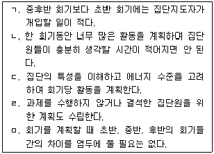
- ㄱ, ㄴ, ㄷ
- ㄱ, ㄷ, ㅁ
- ㄴ, ㄷ, ㄹ
- ㄱ, ㄴ, ㄷ, ㄹ
- ㄴ, ㄷ, ㄹ, ㅁ
(정답률: 알수없음)
42. 청소년 집단상담에서 집단원의 행동을 제한해야 할 때가 아닌 것은?
- 갈등이나 의견의 불일치를 공공연하게 표현할 때
- 지나치게 질문만 계속할 때
- 제 삼자를 험담할 때
- 집단 외부의 이야기를 길게 늘어놓을 때
- 다른 집단원의 사적인 비밀을 캐내려고 할 때
(정답률: 알수없음)
43. 집단상담에서 다음과 같은 기법을 사용하는 가장 중요한 목적은 무엇인가?
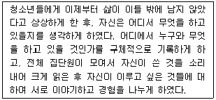
- 불치병 극복
- 감사 느낌 획득
- 계획성 획득
- 가치관 명료화
- 갈등 해소
(정답률: 알수없음)
44. 집단원 선발에 관한 설명으로 적절하지 않은 것은?
- 집단에 따라서는 선발이 불필요하거나 별로 이익이 되지 않을 수 있다.
- 선발이 불가능할 경우도 있다.
- 인구사회학적 요인이나 심리평가 결과를 바탕으로 선발해도 된다.
- 집단상담을 시작하여 몇 회기 지난 후에도 선발이 가능하다.
- 교사나 병원 직원과 같은 의뢰원에 의한 선발은 지양한다.
(정답률: 알수없음)
45. 젠킨스(Jenkins)의 집단에 대한 평가 내용을 모두 고른 것은?
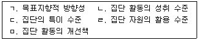
- ㄱ, ㄴ, ㄷ
- ㄴ, ㄷ, ㄹ
- ㄱ, ㄴ, ㄹ, ㅁ
- ㄱ, ㄷ, ㄹ, ㅁ
- ㄴ, ㄷ, ㄹ, ㅁ
(정답률: 알수없음)
46. 집단상담의 특징에 관한 설명으로 옳지 않은 것은?
- 사회의 축소판인 집단에서 참여자들은 유사하고 다양한 경험을 공유할 수 있다.
- 참여자와 집단리더의 상호작용을 통한 문제해결과 목표달성이 강조된다.
- 참여자들은 지지적인 분위기 속에서 새로운 행동을 시도해 볼 수 있다.
- 집단리더의 지시나 조언 없이도 참여자들 간에 깊은 사회적 교류 경험을 가질 수 있다.
- 개인상담에 비해 참여자의 관여와 조절이 쉽고 더 깊어질 수 있다.
(정답률: 알수없음)
47. 다음과 같은 특성을 지닌 집단에 관한 설명으로 옳지 않은 것은?
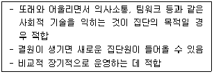
- 집단원이 다양한 사람들과 어울릴 기회가 늘어난다.
- 일상생활의 인간관계 모습을 덜 반영한다.
- 집단 응집력이 결여될 수 있다.
- 집단 참여 오리엔테이션이 중요하다.
- 한 회기나 제한된 시간 내에 다루기 어려운 문제탐색은 피하는 것이 좋다.
(정답률: 알수없음)
48. 집단상담자의 역할을 모두 고른 것은?
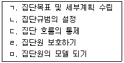
- ㄱ, ㄴ, ㄷ
- ㄱ, ㄴ, ㄹ
- ㄱ, ㄷ, ㄹ, ㅁ
- ㄴ, ㄷ, ㄹ, ㅁ
- ㄱ, ㄴ, ㄷ, ㄹ, ㅁ
(정답률: 알수없음)
49. 다음은 어떤 집단에 관한 설명인가?
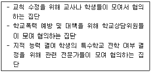
- 치료집단
- 성장집단
- 과업집단
- 교육집단
- 지지집단
(정답률: 알수없음)
50. 집단지도자가 집단의 목적, 규정, 한계 등에 관하여 언급하는 것으로 집단의 틀(frame)을 잡아주는 기법은?
- 조형화
- 보편화
- 구조화
- 반영화
- 명료화
(정답률: 알수없음)
51. 집단의 치료적 요인과 그에 관한 설명으로 옳지 않은 것은?
- 대인관계 입력: 자신이 다른 사람에게 어떻게 지각되는 지에 대해 알게 되는 것
- 정보공유: 삶에 대한 유익한 정보 습득
- 정화: 억압된 감정 표현
- 실존적 요인: 삶의 안정성에 대한 인식
- 일차 가족집단의 교정적 재현: 초기 아동기와 유사한 역동체험을 통한 학습
(정답률: 알수없음)
52. 집단의 전환(과도) 단계에서 집단지도자의 역할로 적절하지 않은 것은?
- 저항을 감지하고 다루기
- 집단 규범형성 증진하기
- 집단원의 불안, 방어, 갈등 등을 다루기
- 갈등약화를 위해서 해석, 직면 피하기
- 집단원의 이해와 책임감 촉진하기
(정답률: 알수없음)
53. 청소년 집단상담에서 쓰기 활동, 신체 활동, 미술 활동, 읽기 활동, 피드백 활동 등 다양한 활동을 사용하는 목적을 모두 고른 것은?
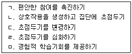
- ㄱ, ㄴ, ㄷ
- ㄱ, ㄴ, ㅁ
- ㄱ, ㄷ, ㄹ, ㅁ
- ㄴ, ㄷ, ㄹ, ㅁ
- ㄱ, ㄴ, ㄷ, ㄹ, ㅁ
(정답률: 알수없음)
54. 집단상담 중 대화를 독점하는 집단원에 대한 상담자의 이해와 대처로 적절하지 않은 것은?
- 대화 독점을 허용한 다른 집단원들이 이를 직접 집단에서 다루도록 개입한다.
- 대화 독점을 통해 얻고자 하는 점과 관련된 역동을 탐색한다.
- 집단원들이 독점 집단원에 대한 불만이나 좌절감을 표현하면서 해결할 때까지 기다린다.
- 대화 독점은 일종의 강박적인 불안감의 표현으로 자신을 은폐하기 위한 시도로 볼 수 있다.
- 상담자가 직접 개입하여 다른 집단원들이 대화에 적극 참여하도록 격려한다.
(정답률: 알수없음)
55. 집단상담자의 전문성 개발에 관한 설명으로 옳은 것을 모두 고른 것은?
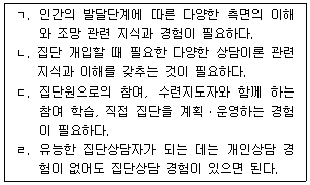
- ㄱ, ㄴ
- ㄱ, ㄴ, ㄷ
- ㄱ, ㄴ, ㄹ
- ㄱ, ㄷ, ㄹ
- ㄴ, ㄷ, ㄹ
(정답률: 알수없음)
56. 집단상담 관련 윤리로 옳은 것을 모두 고른 것은?
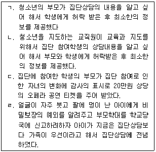
- ㄱ, ㄴ
- ㄱ, ㄷ
- ㄱ, ㄴ, ㄹ
- ㄱ, ㄷ, ㄹ
- ㄴ, ㄷ, ㄹ
(정답률: 알수없음)
57. 청소년 집단상담 마무리 단계에서의 목적이나 활동으로 적절하지 않은 것은?
- 장점 세례
- 추웠던 기억 나누기
- 갈등해소와 통합
- 피드백 주기
- 묘비명 쓰기
(정답률: 알수없음)
58. 집단상담의 평가에 관한 설명으로 옳지 않은 것은?
- 종결단계에서 평가를 계획하여 실시한다.
- 평가대상에 따라 집단원 평가, 집단상담자 평가, 집단상담 프로그램 평가, 집단상담 기관 평가 등이 있다.
- 양적 평가와 질적 평가로 이루어질 수 있다.
- 일차적 목적은 목표관리를 위한 것이다.
- 평가결과는 집단상담의 계획, 유지, 보완, 수정, 폐기 여부에 반영된다.
(정답률: 알수없음)
59. 청소년 집단상담을 실시하기 위하여 준비하는 과정이 순서대로 바르게 제시된 것은?
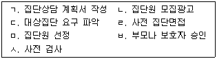
- ㄱ - ㄴ - ㄷ - ㄹ - ㅁ - ㅂ - ㅅ
- ㄱ - ㄴ - ㅁ - ㄹ - ㄷ - ㅅ - ㅂ
- ㄱ - ㄴ - ㅅ - ㄹ - ㄷ - ㅁ - ㅂ
- ㄷ - ㄱ - ㄴ - ㄹ - ㅂ - ㅅ - ㅁ
- ㄷ - ㄱ - ㄴ - ㅂ - ㄹ - ㅁ - ㅅ
(정답률: 알수없음)
60. 청소년 집단상담에서 지도자 역할을 하려는 집단원의 이해와 이에 대한 상담자 개입에 관한 설명으로 적절하지 않은 것은?
- 지도자처럼 질문, 정보탐색, 조언함으로써 자신이 집단에서 취약해지는 것을 방어하려는 반응이 될 수 있다.
- 그런 역할을 하려는 집단원은 집단에 참여한 자신의 일차적 문제를 다룰 기회를 상실할 수 있다.
- 지도자를 돕는 역할이 될 수 있음으로 잘 수용해서 적절히 활용하는 것이 좋다.
- 그런 행동은 다른 집단원이 싫어하는 경향이 있고 집단의 진전을 방해할 수 있다.
- 그런 행동을 하는 동기를 살펴볼 질문을 하면서 집단에서 자신의 목표 달성을 위해 어떤 역할을 할지 결정하게 한다.
(정답률: 알수없음)
3과목: 가족상담
61. 가족상담의 특징에 관한 설명으로 옳은 것은?
- 가족구성원의 경험과 상호작용을 존중하면서 상담을 진행한다.
- 문제나 증상을 가지고 있는 가족구성원만이 상담대상이 된다.
- 가족구성원 각각을 별개의 독립된 존재로 본다.
- 개인을 대상으로 상담을 하면 가족상담이라고 보기 어렵다.
- 가족구성원을 수동적 존재로 본다.
(정답률: 알수없음)
62. 가족상담의 기본 개념에 관한 설명으로 옳은 것은?
- 고무울타리(rubber fence): 가족구성원의 외부 접촉을 촉진하는 경계를 말한다.
- 경계선(boundary): 불변하고 견고한 상태가 이상적인 경계선이다.
- 부적 피드백(negative feedback): 체계 유지를 위해 가해지는 비윤리적 피드백을 말한다.
- 체계의 전체성(wholeness): 체계가 하나의 전체로 존재하고 작동하는 것을 말한다.
- 유기체의 동일 결과성(equifinality): 똑같은 출발에서 다양한 결과에 이르는 것을 말한다.
(정답률: 알수없음)
63. 가족상담에서 사전 동의 과정에 관한 설명으로 옳지 않은 것은?
- 가족상담의 위험을 최소화할 책임이 상담자에게도 있음을 이야기한다.
- 가족상담의 목적을 설명한다.
- 상담회기, 주기 등의 상담 형식에 대해 설명한다.
- 긍정적 결과에 대해 희망을 갖도록 설명한다.
- 개인의 목표가 관계나 가족의 목표보다 우선시된다는 것을 알린다.
(정답률: 알수없음)
64. 자살을 시도하려는 홍길동에게, 상담자가 “길동아, 자살하고 싶지 않은 행복한 마음이 가장 강할 때를 10점이라고 하면 현재 몇 점 정도니?”라고 질문했을 때, 이 질문과 관련한 가족상담 모델과 관련이 있는 것을 모두 고른 것은?
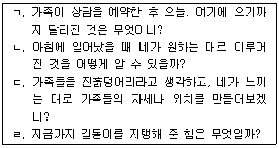
- ㄱ, ㄴ
- ㄷ, ㄹ
- ㄱ, ㄴ, ㄹ
- ㄴ, ㄷ, ㄹ
- ㄱ, ㄴ, ㄷ, ㄹ
(정답률: 알수없음)
65. 상담자가 이혼을 한 부모에게 자녀 양육과 관련한 조언을 할 때 옳지 않은 것은?
- 화가 나서 폭행을 할 것 같으면 타임-아웃(time-out)을 활용하게 한다.
- 부모가 자녀에게 일관된 규칙을 가지고 대하도록 한다.
- 보이지 않는 충성심 때문에 다른 부모를 속이는 일이 일어나지 않게 한다.
- 관심 받고 싶은 자녀의 욕구를 살피도록 조언한다.
- 빠르게 어른처럼 의젓해진 모습은 건강한 성장의 증거라는 것을 알린다.
(정답률: 알수없음)
66. 스마트폰 중독을 경험하는 청소년에 대해, 상담자 A와는 달리 상담자 B와 같은 질문을 하는 가족상담 모델과 관련이 없는 것은?
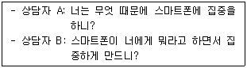
- 내담자의 정체성과 문제를 분리하도록 돕는다.
- 문제가 해결된 상황을 상상해보는 질문을 한다.
- 문제에 이름을 붙여 객관화한다.
- 정의 예식(definitional ceremony)을 실시한다.
- 대안적 이야기를 찾는다.
(정답률: 알수없음)
67. 가족상담에서 체계론적 조망을 하기 위한 질문으로 옳지 않은 것은?
- 가족구성원들이 서로 얼마나 멀리 앉아 있고, 누가 누구 옆에 앉아 있는가?
- IP(Identified Patient)의 문제행동은 어떤 성격적 장애 때문인가?
- 반복적이고 비생산적인 의사소통의 패턴을 발견할 수 있는가?
- 가족 내에서 기본적인 감정은 무엇이며, 누가 그 감정을 전달하는가?
- 어떤 하위체계가 이 가족에서 작용하고 있는가?
(정답률: 알수없음)
68. 가족상담자의 행동윤리에 어긋나는 것은?
- 상담 시작 전, 비밀유지에 대한 입장을 표명한다.
- 가족구성원들과의 다중 관계를 피하기 위해 노력한다.
- 상담 내용을 녹음할 때, 그 취지와 자료 보관 방법 등에 관해 사전에 설명하고 동의서를 받는다.
- 가족체계에 초점을 두는 데 따른 위험성은 거의 없다는 것을 고지한다.
- 가족구성원의 성별, 종교, 성적지향 등의 다양성을 존중한다.
(정답률: 알수없음)
69. 초기 가족상담모델에 관한 설명으로 옳은 것을 모두 고른 것은?
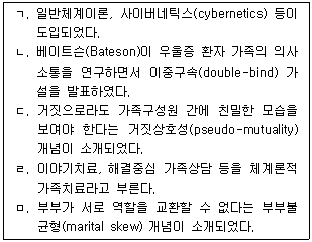
- ㄱ, ㄷ
- ㄴ, ㅁ
- ㄱ, ㄷ, ㄹ
- ㄷ, ㄹ, ㅁ
- ㄱ, ㄴ, ㄷ, ㅁ
(정답률: 알수없음)
70. 다음 가계도에 관한 설명으로 옳은 것은?
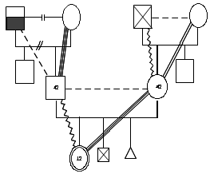
- IP의 조부는 심각한 정신적ㆍ신체적 문제를 경험하고 있다.
- IP의 조부모는 별거 중이다.
- IP는 현재 동생 2명과 함께 살고 있다.
- IP 가족은 삼각관계가 다세대 전수되고 있다.
- IP는 모와 친밀한 관계에 있다.
(정답률: 알수없음)
71. 부모가 청소년 자녀와 갈등을 경험하여 가족상담을 받을 때, 상담자의 자세로 적절하지 않은 것은?
- 부모로 하여금 자녀 앞에서 상대방의 결정을 비판하게 하면서 부모간의 의사소통이 활발하게 한다.
- 가족들이 청소년 자녀의 행동에 대한 느낌을 주고받도록 돕는다.
- 부모와 청소년 자녀 간의 갈등을 악화시킬 수 있는 상호작용을 확인한다.
- 반항하는 자녀의 문제는 가족 전체의 문제임을 인식시킨다.
- 부모 중 한쪽의 불안이 자녀에게 투사되어 다른 한쪽의 부모와 자녀 간에 갈등이 있는 지를 확인한다.
(정답률: 알수없음)
72. 체계이론에서 본 가족체계에 관한 이해로 옳은 것은?
- 합산성(summativity)의 특성이 있다.
- 체계는 상호작용하는 부분들의 집합으로 단일 수준(level)이다.
- 패턴보다는 실체(substance)가 중요하다.
- 단선적 인과관계를 보인다.
- 가족구성원들의 행동은 상호 보완적이다.
(정답률: 알수없음)
73. 초기 가족상담의 발전에 영향을 준 것을 모두 고른 것은?
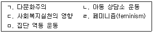
- ㄱ, ㄴ
- ㄱ, ㄴ, ㄷ
- ㄴ, ㄷ, ㅁ
- ㄷ, ㄹ, ㅁ
- ㄱ, ㄴ, ㄷ, ㅁ
(정답률: 알수없음)
74. 구성주의와 사회구성주의가 가족상담에 미친 영향에 관한 설명으로 옳은 것은?
- 문제를 제거하는 것으로 초점이 변화되었다.
- 행동을 재명명하는 기법이 시도되었다.
- 내담자를 변화시키는 상담자의 전문적 역할이 강화되었다.
- 외현적 행동에 집중하게 되었다.
- 언어가 실재를 반영한다는 시각이 태동하였다.
(정답률: 알수없음)
75. 가족상담 중기단계에서 특징적으로 나타나는 상담자 역할은?
- 고지된 동의(informed consent) 절차 실시
- 가족구성원들의 저항 극복
- 가족체계 내의 특정 변화 강조하기
- 필요한 변화에 대한 평가
- 장기목표에 대한 토론
(정답률: 알수없음)
76. 보웬(Bowen)의 가족상담에서 내담자의 감정을 가라앉히고 정서적 반응에 의해 유발된 불안을 낮추며 사고를 촉진하는 기법으로, 가족들이 맺는 관계유형 방식을 살펴보는 것은?
- 탈삼각화
- 다른 이야기로 대치하기
- 자기입장(I-position) 지키기
- 관계실험
- 과정질문
(정답률: 알수없음)
77. 보웬(Bowen)의 자기분화에 관한 설명으로 옳은 것을 모두 고른 것은?
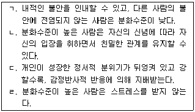
- ㄱ, ㄴ
- ㄱ, ㄹ
- ㄴ, ㄷ
- ㄱ, ㄴ, ㄷ
- ㄴ, ㄷ, ㄹ
(정답률: 알수없음)
78. 가족상담 모델과 상담기법에 관한 설명으로 옳지 않은 것은?
- 구조적 가족상담: 역기능적 상호작용을 그대로 드러내도록 실연기법을 쓰는데, 폭력 가정의 경우에도 적용한다.
- 전략적 가족상담: 경직된 가족규칙과 신화를 반격하거나 과장하는 의식(rituals) 행위를 사용한다.
- 맥락적 가족상담: 가족 간의 불공평에 주목하여 충성심을 가시화시킨다.
- 보웬(Bowen) 가족상담: 타인에게 수용되지 않아도 자신을 표현할 수 있도록 한다.
- 밀란(Milan) 가족상담: 가족이 자신을 점검하고 숨겨진 힘겨루기를 드러내도록 한다.
(정답률: 알수없음)
79. 카터(Carter)와 맥골드릭(McGoldrick)의 가족생활주기에 관한 설명으로 옳지 않은 것은?
- 청소년 자녀를 둔 가족은 자녀의 독립성과 조부모의 취약성을 고려해 가족경계의 융통성을 발휘해야 하는 시기에 해당한다.
- 수직적 스트레스의 요인에는 가족의 태도, 규칙, 신화 등이 포함된다.
- 가족생활주기의 첫 단계는 '가족이 형성되는 결혼' 단계이다.
- 자녀 독립기에는 부부체계를 2인체계로 재정립하고, 자녀와도 성인 대 성인의 관계로 발전시키는 것이 필요하다.
- 가족생활주기에 다세대적 관점을 포함시키고 이혼과 재혼의 단계를 고려하였다.
(정답률: 알수없음)
80. 전략적 가족상담 이론 및 학파와 주요 기법의 연결로 옳지 않은 것은?
- 마다네스(Madanes) - 가장(pretend) 기법
- 헤일리(Haley) - 역설적 기법
- 파라졸리(Palazzoli) - 가족게임
- MRI 학파 - 피드백 고리(feedback loop) 변화
- 밀란(Milan) 학파 - 의사소통 기법
(정답률: 알수없음)
81. 다음에서 상담자가 활용한 구조적 가족상담기법은?
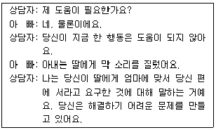
- 불균형(unbalancing)
- 합류(joining)
- 재명명(relabeling)
- 추적(tracking)
- 실연(enacting)
(정답률: 알수없음)
82. 밤늦게 들어온 청소년 자녀에 대한 부모 A, B의 반응에 관한 전략적 가족상담의 개념으로 옳은 것은?
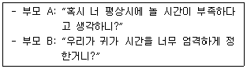
- A: 체계 변화, B: 체계 변형
- A: 행동수정, B: 합리적 규칙
- A: 일차적 변화, B: 이차적 변화
- A: 비난형 의사소통, B: 초이성형 의사소통
- A: 명시적 규칙, B: 암묵적 규칙
(정답률: 알수없음)
83. 해결중심 가족상담의 목표설정 방법으로 적절한 것은?
- 청소년 자녀와 갈등이 많은 부모가 자녀와 '덜 싸우기'를 목표로 설정한다.
- 나비효과처럼 작은 변화가 큰 변화를 가져올 수 있게 설정한다.
- 목표는 내담자가 성취하고자 하는 도착점이라는 것을 알린다.
- 기적질문을 통해 '백만장자의 꿈'을 이룰 수 있다는 희망을 준다.
- 내담자보다는 상담자가 중요하다고 생각하는 것을 목표로 삼는다.
(정답률: 알수없음)
84. 이야기치료에서 외부증인 집단에게 다음과 같이 묻는 상담기법은?
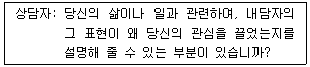
- 역설적 개입(paradoxical intervention)
- 재정의하기(reframing)
- 공명하기(resonance)
- 외재화하기(externalizing)
- 모방(mimesis)
(정답률: 알수없음)
85. 미누친(Minuchin)의 구조적 가족상담에 관한 설명으로 옳은 것은?
- 가족구조란 세대의 구성을 의미한다.
- 유리된 경계선의 가족은 고립되었다기보다는 독립적이다.
- 합류(joining)는 라포와 같다.
- 실연(enactment)은 역기능적 상호작용을 교정하기 위한 것이다.
- 명료한 경계선(boundary)을 세대 간에 잘 전수시켜야 한다.
(정답률: 알수없음)
86. 경험적 가족상담의 목표로 옳지 않은 것은?
- 가족기능 회복보다는 문제 해결에 초점을 둔다.
- 개인 간 차이점을 인정하고 가족구성원의 잠재력을 성장시킨다.
- 내담자의 자아존중감을 높이고, 일치적인 의사소통을 하도록 한다.
- 내담자가 자기 삶에 대한 선택권을 갖도록 한다.
- 가족규칙이 합리적이 되도록 한다.
(정답률: 알수없음)
87. 사티어(Satir)의 경험적 가족상담에 관한 설명으로 옳은 것을 모두 고른 것은?
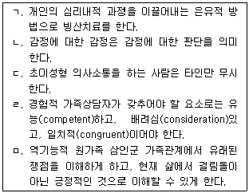
- ㄱ, ㄴ, ㄷ
- ㄱ, ㄴ, ㅁ
- ㄱ, ㄷ, ㄹ
- ㄴ, ㄷ, ㄹ
- ㄴ, ㄹ, ㅁ
(정답률: 알수없음)
88. 이야기치료에서 상담자의 역할에 관한 설명으로 옳지 않은 것은?
- 독특한 결과와 관련하여 과거, 현재, 미래의 행동과 정체성 영역에서 무슨 일이 있어났고, 의미가 무엇인지에 관해 질문한다.
- 대안적 정체성을 세우는 과정에서 외부 증인집단의 반영팀에게도 질문한다.
- 문제이야기를 해체하고 독특한 결과에 의미를 부여할 수 있게 한다.
- 탈중심적이고 영향력 있는 위치를 고수한다.
- 내포되었지만 드러나지 않은 이야기는 다루지 않는다.
(정답률: 알수없음)
89. 가족체계를 사정, 평가하는 도구 중 질적 평가도구에 해당되는 것을 모두 고른 것은?
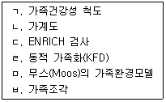
- ㄱ, ㄴ, ㅂ
- ㄴ, ㄹ, ㅂ
- ㄴ, ㄹ, ㅁ, ㅂ
- ㄱ, ㄴ, ㄷ, ㄹ, ㅁ
- ㄱ, ㄷ, ㄹ, ㅁ, ㅂ
(정답률: 알수없음)
90. 다음의 상담 장면에서 상담자가 시도하고 있는 개입 기법은?
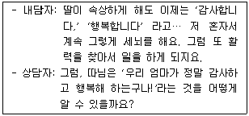
- 반영 질문
- 대처 질문
- 실연 질문
- 관계성 질문
- 과정 질문
(정답률: 알수없음)
4과목: 학업상담
91. 캐롤(Carroll)이 제안한 학교학습모형에 포함되는 요인이 아닌 것은?
- 능력
- 지속성
- 학습기회
- 교수의 질
- 부모와의 관계
(정답률: 알수없음)
92. 하이디(Hidi)와 레닝거(Renninger)가 제시한 흥미 발달단계 중 다음의 내용에 해당되는 단계는?
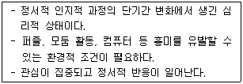
- 상황적 흥미의 유지 단계
- 상황적 흥미의 소멸 단계
- 상황적 흥미의 촉발 단계
- 개인적 흥미의 등장 단계
- 개인적 흥미로 자리 잡음 단계
(정답률: 알수없음)
93. 학업상담에 있어 지능에 관한 설명으로 옳지 않은 것은?
- 지능에 대한 학습자의 주관적인 인식은 학습 태도와 관련이 없다.
- 지능지수는 같은 연령대 학생들 간의 상대적 위치를 의미한다.
- 지능 검사는 스탠퍼드-비네 검사, 웩슬러 검사, 카우프만 검사 등이 있다.
- 지능이 주는 영향력은 크지만 학업성취를 100% 예측하는 것은 아니다.
- 지능점수를 통해 학생의 인지적 강점 및 약점을 파악할 수 있다.
(정답률: 알수없음)
94. 데시(Deci)와 라이언(Ryan)의 자기결정성 이론에서 다음의 내용에 해당하는 동기 유형은?
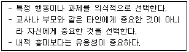
- 외적 조절(extrinsic motivation)
- 통합된 조절(integrated regulation)
- 확인된 조절(identified regulation)
- 내적 동기(intrinsic motivation)
- 부과된 조절(introjected regulation)
(정답률: 알수없음)
95. 주의집중력 향상을 위한 전략으로 옳은 것을 모두 고른 것은?
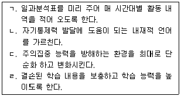
- ㄱ, ㄴ
- ㄴ, ㄷ
- ㄱ, ㄴ, ㄷ
- ㄴ, ㄷ, ㄹ
- ㄱ, ㄴ, ㄷ, ㄹ
(정답률: 알수없음)
96. 학습부진 영재아를 위한 상담방법으로 적절하지 않은 것은?
- 비언어적 영역의 강점을 가진 학습장애 영재아를 위해 영상적 사고, 공간설계, 극적인 표현 등의 활동을 구성한다.
- 특정한 능력이나 흥미에 대한 확인만이 아니라 추상적 사고 능력을 확인한다.
- 학습부진 영재아의 학습과정과 노력은 무시하고 결과만을 강조한다.
- 필요한 특수교육 서비스 제공여부를 고려할 수 있다.
- 정서적 지지를 경험할 수 있는 집단상담을 제공할 수 있다.
(정답률: 알수없음)
97. 로젠샤인(Rosenshine)과 스티븐스(Stevens)가 제시한 교사의 긍정적인 피드백 유형 중 다음에 해당되는 것은?
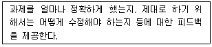
- 전략 피드백
- 수행 피드백
- 동기 피드백
- 귀인 피드백
- 평가 피드백
(정답률: 알수없음)
98. 와이너(Weiner)가 제안한 다음의 귀인 속성 중 통제 불가능한 것을 모두 고른 것은?
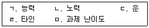
- ㄱ, ㄴ
- ㄴ, ㄷ, ㄹ
- ㄴ, ㄷ, ㅁ
- ㄱ, ㄷ, ㄹ, ㅁ
- ㄱ, ㄴ, ㄷ, ㄹ, ㅁ
(정답률: 알수없음)
99. 이클스(Eccles), 윅필드(Wigfield)와 쉬펠레(Schiefele)가 제시한 자녀의 학습과 관련 있는 부모의 태도에 해당되는 것을 모두 고른 것은?
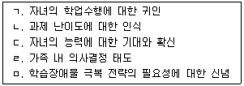
- ㄱ, ㄴ, ㄷ
- ㄴ, ㄷ, ㄹ
- ㄷ, ㄹ, ㅁ
- ㄱ, ㄴ, ㄷ, ㅁ
- ㄴ, ㄷ, ㄹ, ㅁ
(정답률: 알수없음)
100. 학습과 관련된 뇌의 기능에 대한 설명으로 옳지 않은 것은?
- 주로 우반구는 시공간과 관련된 지각능력, 운동능력 그리고 정서 기능 등을 담당한다.
- 전두엽에는 주의, 계획, 사고 기능과 운동 기능을 담당하는 베르니케 영역이 있다.
- 측두엽은 언어 이해를 담당하며, 손상되면 글을 읽거나 말의 의미를 파악하는 데 심각한 어려움을 경험한다.
- 두정엽은 감각정보의 통합 및 판단을 담당하며, 다양한 형태의 감각정보를 통해 사물을 인식하게 한다.
- 후두엽은 시각정보를 분석하고 통합하는 역할을 한다.
(정답률: 알수없음)
101. 지적장애(정신지체) 아동의 인지적 특성을 모두 고른 것은?
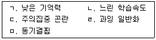
- ㄱ, ㄴ
- ㄱ, ㄷ, ㄹ
- ㄴ, ㄷ, ㅁ
- ㄱ, ㄴ, ㄷ, ㄹ
- ㄱ, ㄴ, ㄷ, ㅁ
(정답률: 알수없음)
102. 시험불안 원인을 다음과 같이 설명하는 이론적 접근은?
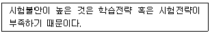
- 욕구이론 접근
- 인지적 간섭 모델 접근
- 행동주의적 접근
- 인지적 결핍 모델 접근
- 정서적 모델 접근
(정답률: 알수없음)
103. 학습부진학생의 상담에 관한 설명으로 적절하지 않은 것은?
- 병존하는 문제와 상관없이 학습문제만을 목표로 한다.
- 상담장면에서 학습과정을 재연할 수 있다.
- 성공경험을 통해 효능감을 증가시키도록 한다.
- 학습방법에 대한 진단 검사 등 현재 상태를 객관적으로 진단할 수 있는 심리검사를 활용한다.
- 부모와 자녀가 서로에 대한 기대를 구체화하고 합의할 수 있도록 돕는다.
(정답률: 알수없음)
104. 학습동기가 매우 낮거나 없는 상태에 관한 설명으로 옳은 것은?
- 주변 세계에 대한 호기심이 많고 겁이 없다.
- 실패에 대한 귀인을 노력 때문이라고 본다.
- 사회적 보상에 예민하고 인내력이 낮다.
- 욕구위계에서 상위 욕구를 먼저 충족시키고자 한다.
- 외부로부터 주어지는 강화 혹은 처벌에 무감각하다.
(정답률: 알수없음)
1⑤. 자기조절학습전략에 관한 설명으로 옳지 않은 것은?
- 새로 습득한 전략을 모든 과제나 상황에 적용한다.
- 다른 사람에게 도움을 청하는 방법이 포함된다.
- 충동성이 높은 아동에게도 가르치면 도움이 된다.
- 자기 지향적 피드백의 습득 방법이 포함된다.
- 짐머만(Zimmerman)은 개인, 환경, 행동의 3차원적 상호작용에 의해 발달된다고 보았다.
(정답률: 알수없음)
106. 다음 활동은 어떤 학습전략을 습득하기 위한 것인가?
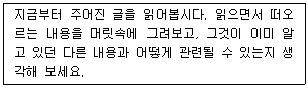
- 시연전략
- 정교화 전략
- 노력관리 전략
- 협동학습 전략
- 공부환경관리 전략
(정답률: 알수없음)
107. 학업상담에서 심리검사의 활용지침으로 옳은 것은?
- 검사의 신뢰성 유지를 위해 내담자에게 검사의 목적이나 진행방법을 언급해서는 안 된다.
- 심리검사 결과가 잠정적인 결과라는 인식을 가지고 내담자에게 이야기한다.
- 심리검사를 받는 것은 자주 할 수 있는 일이 아니므로, 한번 검사할 때 많이 하는 것이 효과적이다.
- 심리검사와 행동관찰의 결과가 다를 때는 심리검사 결과를 잘못된 것으로 본다.
- 상담에서와 달리 심리검사를 실시할 때는 라포 형성이 필요없다.
(정답률: 알수없음)
108. 학습장애에 관한 설명으로 옳은 것은?
- 필요할 경우 약물치료를 병행할 수 있다.
- 지적장애(정신지체)로 인한 학습결손도 포함된다.
- 과제가 같으면 학습장애 학생들이 경험하는 어려움도 같다.
- 학습장애의 한 특성인 학습전략 결함은 성인이 되면 대부분 해결된다.
- 커크(Kirk)와 챌팡트(Chalfant)는 읽기장애, 글씨쓰기장애, 철자 및 학문장애, 수학장애 등을 발달적 학습장애로 보았다.
(정답률: 알수없음)
109. 중재-반응모형(Responsiveness-To-Intervention)에 관한 설명으로 옳지 않은 것은?
- 학업문제를 가진 학생을 조기에 선별하고 개입한다.
- 선별검사, 교수프로그램, 진전도 검사 등을 실시한다.
- 진단과 평가 결과가 모두 개입방안과 직접 연관될 수 있다.
- 학습장애 여부를 먼저 진단한 다음, 그에 맞는 개입 방안을 제시한다.
- 환경적 요인에 의한 학습문제와 개인내적 요인에 의한 학습 문제를 변별할 수 있다.
(정답률: 알수없음)
110. 학업 지연행동(procrastination)의 극복 전략을 모두 고른 것은?
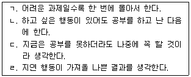
- ㄱ, ㄴ
- ㄴ, ㄹ
- ㄱ, ㄷ, ㄹ
- ㄴ, ㄷ, ㄹ
- ㄱ, ㄴ, ㄷ, ㄹ
(정답률: 알수없음)
111. 질문생성 학습전략에 관한 설명으로 옳지 않은 것은?
- 교과내용의 중요한 부분을 잘 인식할 수 있도록 한다.
- 자신의 이해능력에 대한 초인지를 강화시킨다.
- 학습자 자신을 동기화시킬 수 있다.
- 선행 지식을 활성화시킨다.
- 학습자보다 교수자가 제시한 질문 유형이 중요하다.
(정답률: 알수없음)
112. 벤더(Bender)가 제시한 학생의 주의집중 향상을 위해 교사가 사용할 수 있는 전략으로 옳은 것을 모두 고른 것은?
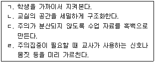
- ㄱ, ㄴ
- ㄴ, ㄷ
- ㄱ, ㄴ, ㄹ
- ㄴ, ㄷ, ㄹ
- ㄱ, ㄴ, ㄷ, ㄹ
(정답률: 알수없음)
113. 우리나라 학교현장에서 사용되고 있는 학습부진의 기준에 관한 설명으로 옳은 것은?
- 잠재적 학습능력을 중시한다.
- 기초학력미달의 기준은 목표성취수준의 40%이다.
- 교과학습부진의 기준은 매년 전국 시도교육청에서 협의한 후 공유한다.
- 학습부진의 원인을 중시한다.
- 기초학습부진의 기준은 초등학교 3학년 수준의 읽기, 쓰기, 기초수학능력이다.
(정답률: 알수없음)
114. 기어리(Geary)가 제시한 수학 학습장애와 관련된 인지적 결함을 모두 고른 것은?
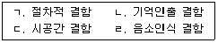
- ㄱ, ㄴ, ㄷ
- ㄱ, ㄴ, ㄹ
- ㄱ, ㄷ, ㄹ
- ㄴ, ㄷ, ㄹ
- ㄱ, ㄴ, ㄷ, ㄹ
(정답률: 알수없음)
115. 학업상담을 위해 사용될 수 있는 심리검사에 관한 설명으로 옳지 않은 것은?(문제 오류로 실제시험에서는 4, 5번이 정답처리 되었습니다. 여기서는 4번을 누르시면 정답 처리 됩니다.)
- 한국교육개발원 기초학습기능검사: 유치원부터 초등학교 6학년에 이르는 학생들을 대상으로 기초능력 정도를 평가하는 검사이다.
- 기초학습수행평가체제(BASA): 학습부진아동이나 특수교육 대상자의 읽기, 쓰기, 수학 영역에서의 수행수준을 진단하고 평가하는 검사이다.
- K-WISC-Ⅳ: K-WISC-Ⅲ와 비교할 때 차례 맞추기, 모양 맞추기, 미로 등 3개 소검사가 빠지고 새로운 소검사 5개가 추가되었다.
- 국립특수교육원 기초학력검사: 초ㆍ중ㆍ고등학교 학생의 학업성취 수준을 파악하여 보정교육으로 연결할 수 있도록 하기 위한 검사이다.
- BGT(Bender-Gestalt Test): 투사검사로 8개의 도형을 모사하도록 함으로써 무의식의 정서적, 심리적 측면을 파악할 수 있도록 한다.
(정답률: 알수없음)
116. 맥키치(McKeachie)가 분류한 조직화 전략에 해당되는 것은?
- 매개 단어법
- 핵심 아이디어 선택
- 장소법
- 밑줄치기
- 자기검사
(정답률: 알수없음)
117. 학습부진 학생들에게 필요한 목표설정전략에 관한 설명으로 옳은 것을 모두 고른 것은?
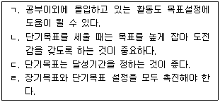
- ㄱ, ㄴ
- ㄴ, ㄷ
- ㄷ, ㄹ
- ㄱ, ㄷ, ㄹ
- ㄱ, ㄴ, ㄷ, ㄹ
(정답률: 알수없음)
118. 학습전략에 관한 설명으로 옳지 않은 것은?
- 절차적 지식은 포함되지 않는다.
- 의식적일 수도 있고, 무의식적일 수도 있다.
- 감정 상태를 관리하기 위한 정의적 전략도 포함될 수 있다.
- 조직화 전략은 학습내용의 내적 연결 구조를 만들 때 사용할 수 있다.
- 낮은 수준의 정보처리과정과 높은 수준의 정보처리과정이 다 포함된다.
(정답률: 알수없음)
119. 정보처리이론의 관점에서 초인지의 기능을 모두 고른 것은?
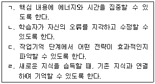
- ㄱ, ㄴ
- ㄴ, ㄹ
- ㄱ, ㄴ, ㄷ
- ㄱ, ㄷ, ㄹ
- ㄱ, ㄴ, ㄷ, ㄹ
(정답률: 알수없음)
120. 시험불안의 개입방법에 관한 설명으로 옳은 것을 모두 고른 것은?
- ㄱ, ㄴ
- ㄱ, ㄴ, ㄷ
- ㄴ, ㄷ, ㄹ
- ㄱ, ㄴ, ㄹ, ㅁ
- ㄱ, ㄷ, ㄹ, ㅁ
(정답률: 알수없음)
홀랜드 유형은 개인의 흥미와 직업환경을 분류하는 모형으로, 변별성은 이 유형들 간의 상대적 중요도를 나타내는 개념이다. 즉, 어떤 유형이 다른 유형보다 더 중요하다는 것을 나타내는 것이다.
계측성은 RI유형과 RS유형의 흥미를 비교하는 개념이며, 일관성은 개인의 흥미유형과 자신이 속한 직업환경유형의 유사성을 나타내는 개념이다. 일치성은 육각형모형에서 흥미유형 또는 직업환경유형 간의 거리와 이론적 관계와의 비례성을 나타내는 개념이다. 정체성은 변별성, 일관성, 일치성이 모두 낮을 때 개인의 흥미와 직업환경이 명확하지 않은 상태를 나타내는 개념이다.